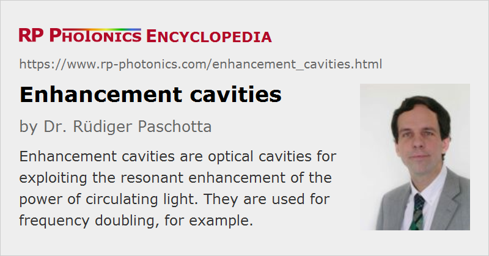

Enhancement Cavities
Definition: optical cavities for exploiting the resonant enhancement of the power of circulating light
Alternative term: resonant enhancement cavities
More general term: optical resonators
German: Erhöhungsresonatoren
Categories: optical resonators, photonic devices
How to cite the article; suggest additional literature
Author: Dr. Rüdiger Paschotta
An enhancement cavity is an optical cavity (resonator) which is used for resonant enhancement of an optical power or intensity: if the incident light is resonant with the cavity and is mode-matched to it, the intracavity power can be far above the incident power, particularly for a cavity with high finesse. The topography can be that of a linear cavity or a ring resonator.
An enhancement resonator can contain other optical components. For example, a nonlinear crystal can be used for efficient nonlinear frequency conversion, such as frequency doubling [1] or sum frequency generation. As an example, Figure 1 shows a monolithic frequency doubler, as described more in detail in Ref. [5]. It consists of a nonlinear crystal with dielectric coatings on the end faces which make the pump wave (red) resonant. Frequency-doubled light is extracted on the right-hand side. Even if the nonlinear process converts only a small fraction of the circulating optical power, the resonator allows for a kind of recycling of the unused light. The conversion can be very efficient if impedance matching is achieved, i.e. if the input mirror transmission equals all other resonator losses.
Frequency doubling can be efficient at even significantly lower powers (a few milliwatts) by using a doubly resonant scheme, where both pump wave and second-harmonic wave are resonant. However, the double resonance is usually delicate to maintain.
Resonant doubling should not be confused with intracavity frequency doubling, where the nonlinear crystal is placed within the laser cavity, so that there is no need for a separate resonant cavity.
Conditions for Efficient Resonant Enhancement
For efficient operation of an enhancement cavity, several factors have to be considered:
- The resonance condition leads to the requirement that the resonator length must be correct within a fraction of an optical wavelength. An electronic feedback loop is often used for maintaining the resonance over longer times. Such a feedback loop may either adjust the optical frequency of the laser to match the cavity frequency, or adjust the cavity length e.g. via a piezo actuator. Note that for high-finesse cavities, which make possible a large power enhancement, the stability requirements on both the cavity and the laser can be very high.
- The incoming radiation must be mode-matched to the cavity, using e.g. appropriate optics for focusing and alignment. Of course, the pump radiation should be delivered with essentially diffraction-limited beam quality.
- To minimize losses via back reflection of pump power, the enhancement cavity should be impedance matched. This means that the transmission coefficient of the input mirror for the pump radiation matches the coefficient quantifying all other losses.
Enhancement Cavities for Mode-locked Lasers
Enhancement cavities are often applied in conjunction with single-frequency lasers, but can also be used with mode-locked lasers. In the latter case, the cavity length has to be chosen such that the cavity round-trip time is an integer multiple of the pulse spacing. In other words, the free spectral range of the cavity must be an integer multiple of the laser's pulse repetition rate, so that all lines of the laser output (→ frequency combs) can be simultaneously resonant. Also, the intracavity chromatic dispersion and nonlinearity should not be too strong [8].
Recently, enhancement cavities have been used with very intense ultrashort pulses in order to obtain high harmonic generation at very high pulse repetition rates [6, 7]. Challenges arise from the need for precise intracavity dispersion compensation, from the very high optical intensities on resonator mirrors and other optics, and from beam distortions due to plasma generation in the gas used for the high harmonic generation.
Questions and Comments from Users
Here you can submit questions and comments. As far as they get accepted by the author, they will appear above this paragraph together with the author’s answer. The author will decide on acceptance based on certain criteria. Essentially, the issue must be of sufficiently broad interest.
Please do not enter personal data here; we would otherwise delete it soon. (See also our privacy declaration.) If you wish to receive personal feedback or consultancy from the author, please contact him e.g. via e-mail.
By submitting the information, you give your consent to the potential publication of your inputs on our website according to our rules. (If you later retract your consent, we will delete those inputs.) As your inputs are first reviewed by the author, they may be published with some delay.
Bibliography
| [1] | A. Ashkin, G. D. Boyd, and J. M. Dziedzic, “Resonant optical second harmonic generation and mixing”, IEEE J. Quantum Electron. 2 (6), 109 (1966), doi:10.1109/JQE.1966.1074007 |
| [2] | B. Couillaud, T. W. Hänsch and S. G. MacLean, “High power CW sum-frequency generation near 243 nm using two intersecting enhancement cavities”, Opt. Commun. 50, 127 (1984), doi:10.1016/0030-4018(84)90149-4 |
| [3] | Z. Y. Ou and H. J. Kimble, “Enhanced conversion efficiency for harmonic-generation with double-resonance”, Opt. Lett. 18 (13), 1053 (1993), doi:10.1364/OL.18.001053 |
| [4] | K. Fiedler et al., “Highly efficient frequency-doubling with a doubly resonant monolithic total-internal-reflection ring resonator”, Opt. Lett. 18 (21), 1786 (1993), doi:10.1364/OL.18.001786 |
| [5] | R. Paschotta et al., “82% efficient continuous-wave frequency doubling of 1.06 μm with a monolithic MgO:LiNbO3 resonator”, Opt. Lett. 19 (17), 1325 (1994), doi:10.1364/OL.19.001325 |
| [6] | R. J. Jones and J. Ye, “High-repetition-rate coherent femtosecond pulse amplification with an external passive optical cavity”, Opt. Lett. 29 (23), 2812 (2004), doi:10.1364/OL.29.002812 |
| [7] | R. J. Jones et al., “Phase-coherent frequency combs in the vacuum ultraviolet via high-harmonic generation inside a femtosecond enhancement cavity”, Phys. Rev. Lett. 94 (19), 193201 (2005), doi:10.1103/PhysRevLett.94.193201 |
| [8] | K. D. Moll et al., “Nonlinear dynamics inside femtosecond enhancement cavities”, Opt. Express 13 (5), 1672 (2005), doi:10.1364/OPEX.13.001672 |
| [9] | K. D. Moll et al., “Output coupling methods for cavity-based high-harmonic generation”, Opt. Express 14 (18), 8189 (2006), doi:10.1364/OE.14.008189 |
| [10] | D. C. Yost et al., “Efficient output coupling of intracavity high-harmonic generation”, Opt. Lett. 33 (10), 1099 (2008), doi:10.1364/OL.33.001099 |
| [11] | R. Krischek et al., “Ultraviolet enhancement cavity for ultrafast nonlinear optics and high-rate multiphoton entanglement experiments”, Nature Photon. 4 (3), 170 (2010), doi:10.1038/nphoton.2009.286 |
| [12] | I. Pupeza et al., “Power scaling of a high-repetition-rate enhancement cavity”, Opt. Lett. 35 (12), 2052 (2010), doi:10.1364/OL.35.002052 |
| [13] | H. Carstens et al., “Large-mode enhancement cavities”, Opt. Express 21 (9), 11606 (2013), doi:10.1364/OE.21.011606 |
| [14] | N. Lilienfein et al., “Enhancement cavities for few-cycle pulses”, Opt. Lett. 42 (2), 271 (2017), doi:10.1364/OL.42.000271 |
See also: cavities, nonlinear frequency conversion, resonant frequency doubling, intracavity frequency doubling
and other articles in the categories optical resonators, photonic devices
|  |
If you like this page, please share the link with your friends and colleagues, e.g. via social media:
These sharing buttons are implemented in a privacy-friendly way!